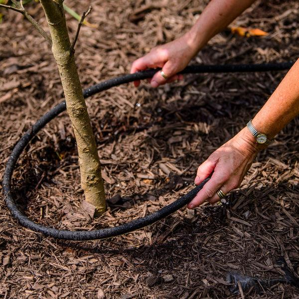

1. Droogtebestrijding begint nu!
Het bestrijden van droogte begint bij het bewerken van de bodem of het aanplanten op zich. Een gezonde bodem is beter bestand tegen droogte. Belangrijk hierbij is dat de verhoudingen tussen aarde, water en lucht zo optimaal mogelijk zijn.
Als dit niet zo is, dan zijn er niet-invasieve methodes om de bodem of groeiplaats te optimaliseren met een minimum aan verstoring. Beperk bodembewerking en voorkom structuurbederf en verstoring van het bodemleven.
Houd gedurende het jaar met de gepaste bodemverbeteraar het gehalte aan organische stof op peil en voorkom uitdroging van de toplaag door het aanbrengen van een aangepaste mulchlaag.